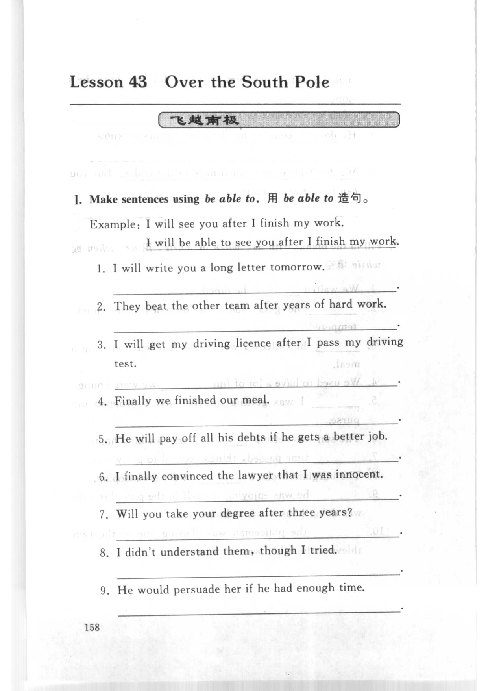
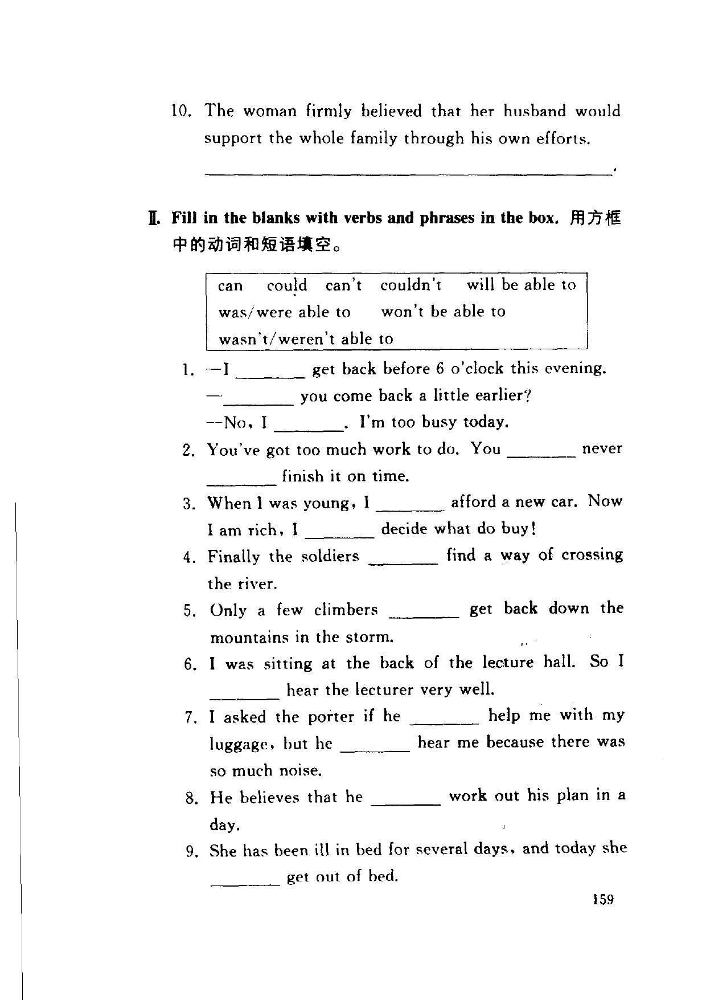
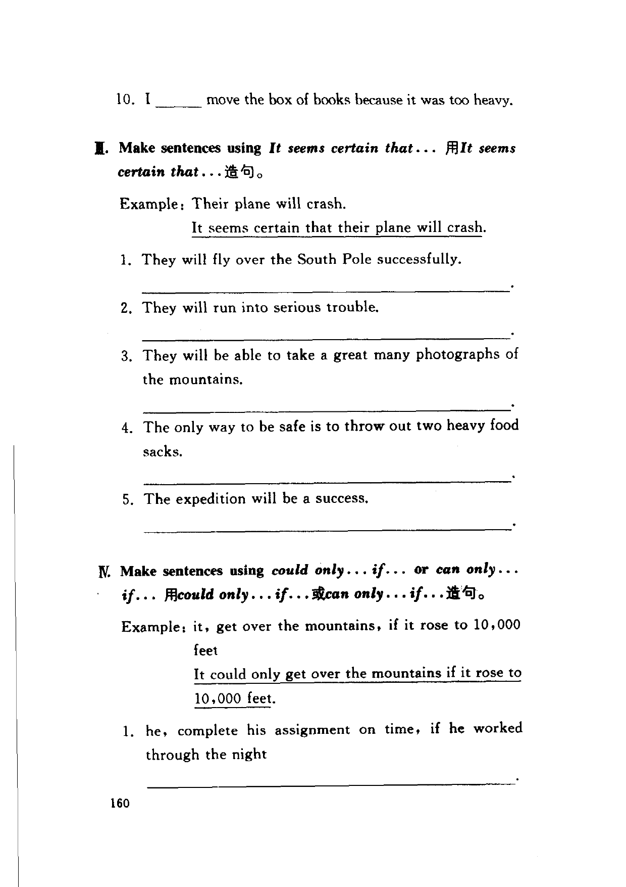
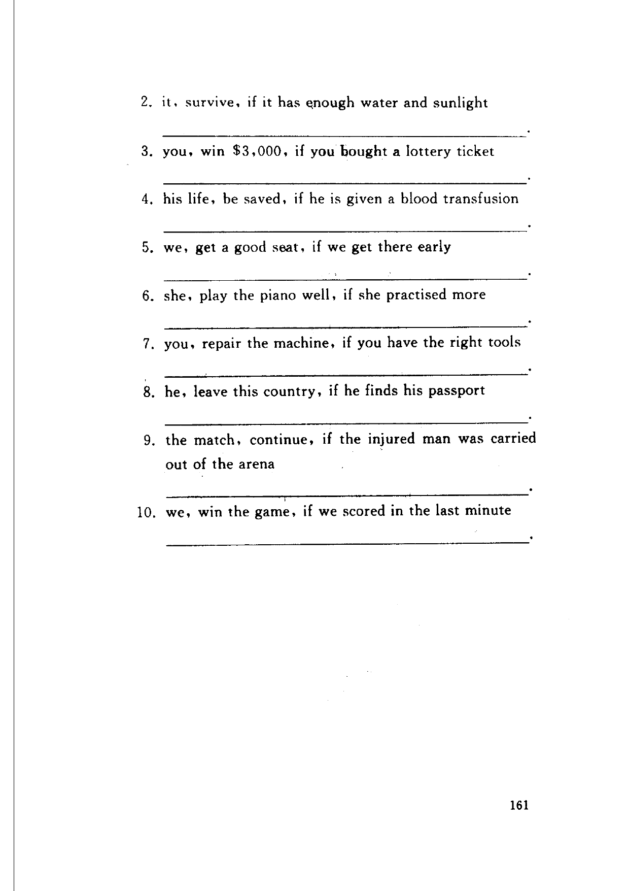

Grammar exercises · 语法练习
I. Make sentences using be able to.
用 be able to 造句。
Example: I will see you after I finish my work.
I will be able to see you after I finish my work.
-
I. be able to — I will write you a long letter tomorrow.
-
I. be able to — They beat the other team after years of hard work.
-
I. be able to — I will get my driving licence after I pass my driving test.
-
I. be able to — Finally we finished our meal.
-
I. be able to — He will pay off all his debts if he gets a better job.
-
I. be able to — I finally convinced the lawyer that I was innocent.
-
I. be able to — Will you take your degree after three years?
-
I. be able to — I didn't understand them, though I tried.
-
I. be able to — He would persuade her if he had enough time.
-
I. be able to — The woman firmly believed that her husband would support the whole family through his own efforts.
II. Fill in the blanks with verbs and phrases in the box.
用方框中的动词和短语填空。
Box: can could can't couldn't will be able to was/were able to won't be able to wasn't/weren't able to
-
II. be able to — —I get back before 6 o'clock this evening.
— you come back a little earlier?
—No, I . I'm too busy today. -
II. be able to — You've got too much work to do. You never finish it on time.
-
II. be able to — When I was young, I afford a new car. Now I am rich, I decide what do buy!
-
II. be able to — Finally the soldiers find a way of crossing the river.
-
II. be able to — Only a few climbers get back down the mountains in the storm.
-
II. be able to — I was sitting at the back of the lecture hall. So I hear the lecturer very well.
-
II. be able to — I asked the porter if he help me with my luggage, but he hear me because there was so much noise.
-
II. be able to — He believes that he work out his plan in a day.
-
II. be able to — She has been ill in bed for several days, and today she get out of bed.
-
II. be able to — I move the box of books because it was too heavy.
III. Make sentences using It seems certain that…
用 It seems certain that… 造句。
Example: Their plane will crash.
It seems certain that their plane will crash.
-
III. It seems certain that — They will fly over the South Pole successfully.
-
III. It seems certain that — They will run into serious trouble.
-
III. It seems certain that — They will be able to take a great many photographs of the mountains.
-
III. It seems certain that — The only way to be safe is to throw out two heavy food sacks.
-
III. It seems certain that — The expedition will be a success.
IV. Make sentences using could only…if… or can only…if…
用 could only…if… 或 can only…if… 造句。
Example: it, get over the mountains, if it rose to 10,000 feet
It could only get over the mountains if it rose to 10,000 feet.
-
IV. could only / can only — he, complete his assignment on time, if he worked through the night
-
IV. could only / can only — it, survive, if it has enough water and sunlight
-
IV. could only / can only — you, win $3,000, if you bought a lottery ticket
-
IV. could only / can only — his life, be saved, if he is given a blood transfusion
-
IV. could only / can only — we, get a good seat, if we get there early
-
IV. could only / can only — she, play the piano well, if she practised more
-
IV. could only / can only — you, repair the machine, if you have the right tools
-
IV. could only / can only — he, leave this country, if he finds his passport
-
IV. could only / can only — the match, continue, if the injured man was carried out of the arena
-
IV. could only / can only — we, win the game, if we scored in the last minute
Original images · 原图对照
Expand a page to compare it with the transcription. Open the original in a new tab to zoom in.
展开原图核对文字，也可以在新标签页打开原图放大查看。
Book page 158 · Exercise I (be able to, example and items 1–9)
Open original · 打开原图 ↗ Download original · 下载原图


Book page 159 · Exercise I (item 10) and Exercise II (verbs and phrases in the box, items 1–9)
Open original · 打开原图 ↗ Download original · 下载原图


Book page 160 · Exercise II (item 10) and Exercise III (It seems certain that, example and items 1–5) and Exercise IV (example and item 1)
Open original · 打开原图 ↗ Download original · 下载原图


Book page 161 · Exercise IV (could only...if or can only...if, items 2–10)
Open original · 打开原图 ↗ Download original · 下载原图


Your notes and answers
Use this space for longer responses or exercises that do not have an individual answer box.